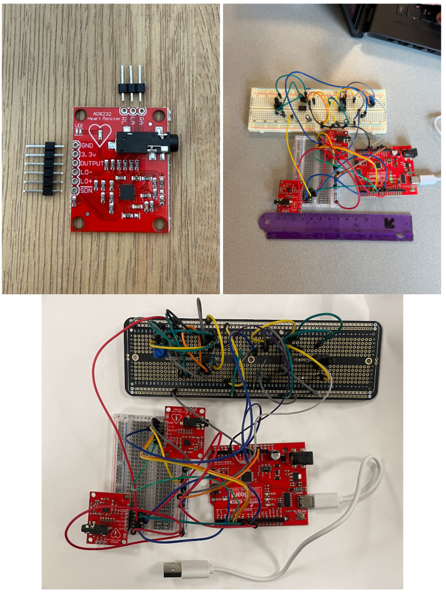

Publications and Projects / 2026
Portable ECG Education Platform
A portable electrocardiogram lets students follow a cardiac signal from the electrodes to six displayed limb leads.

Two measured leads, six views
The senior design team used AD8232 acquisition hardware and Arduino sampling to measure leads I and II. MATLAB and Python processing reconstruct the other four limb leads and display how each views the same electrical activity.
Filtering in the classroom
Controlled recordings and classroom demonstrations gave different results. The Kalman filter performed best in controlled tests, while the Butterworth bandpass filter gave the most reliable traces during outreach.
2025–2026 · UC San Diego Bioengineering Senior Design
Explore the hardware and software · Outreach project site